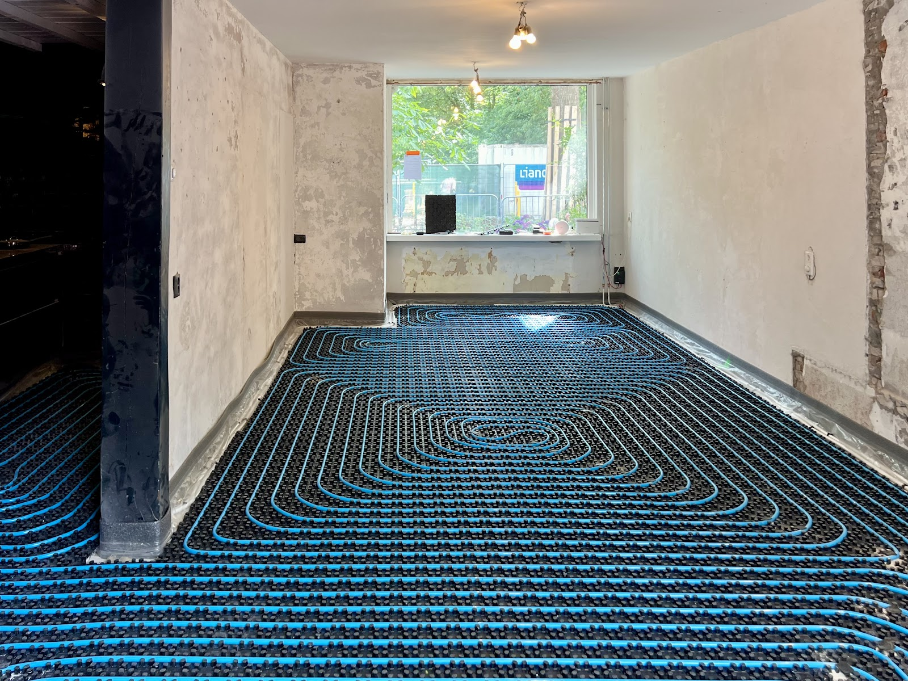
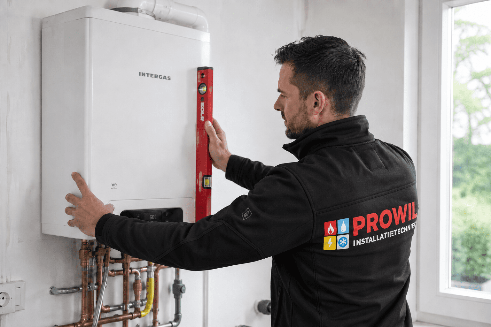
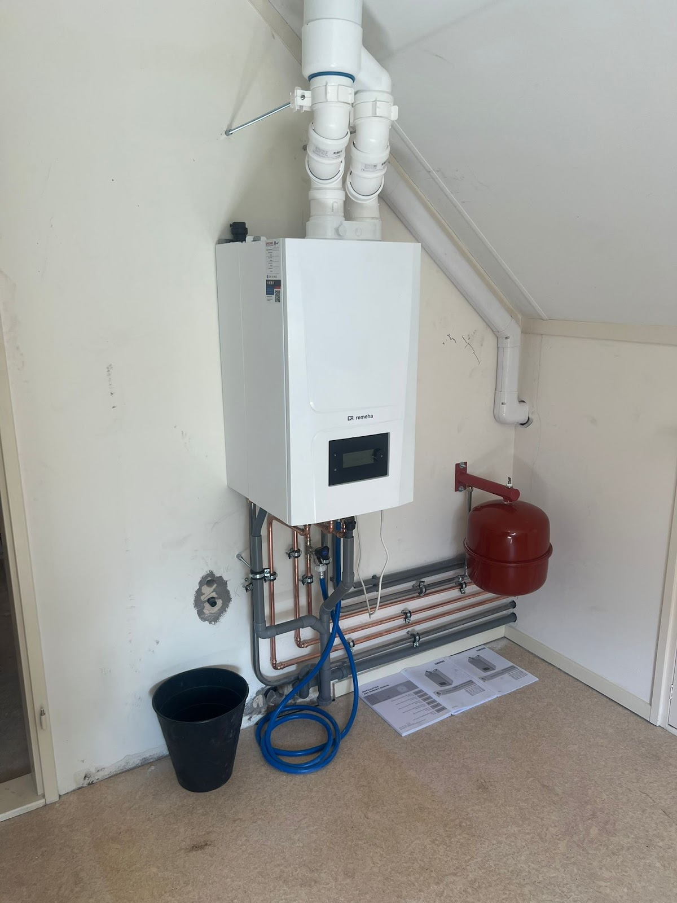
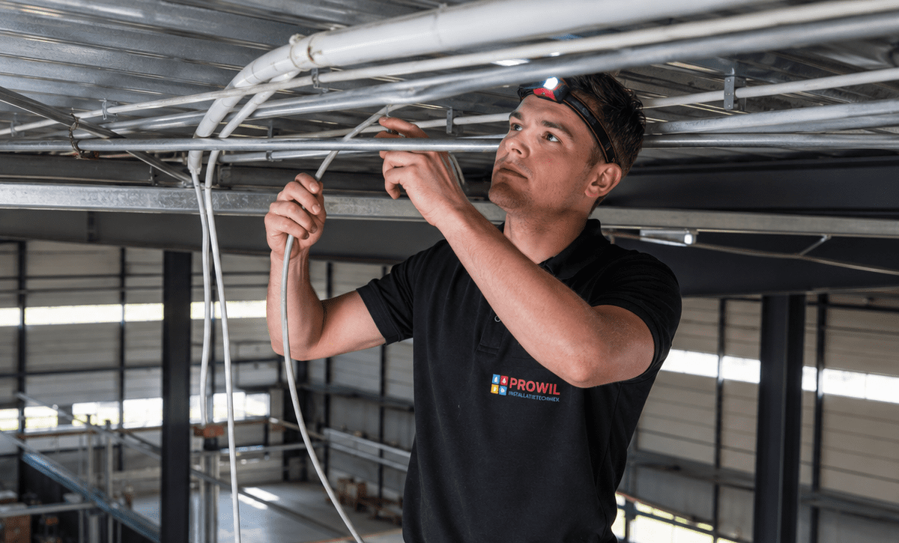
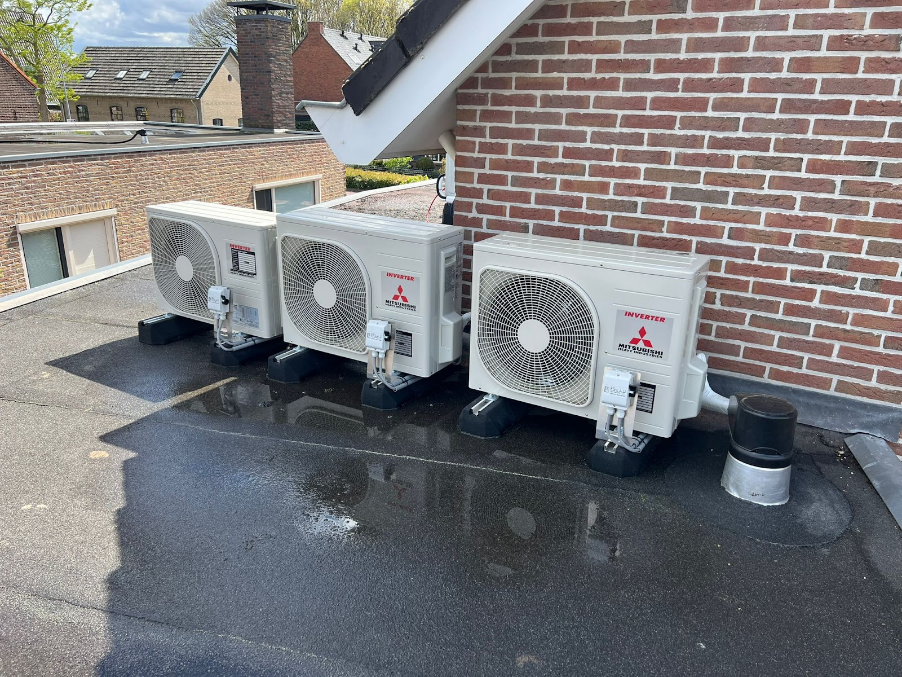
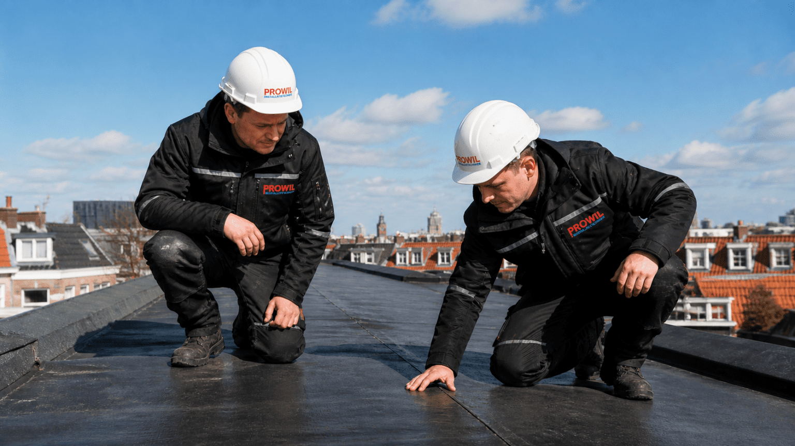
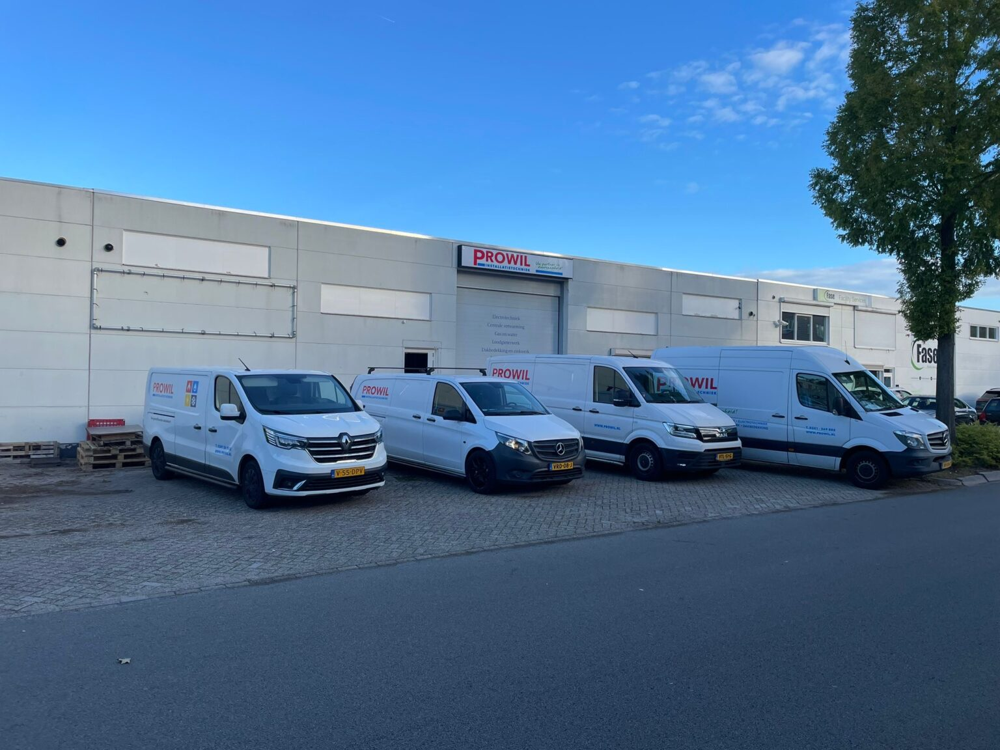
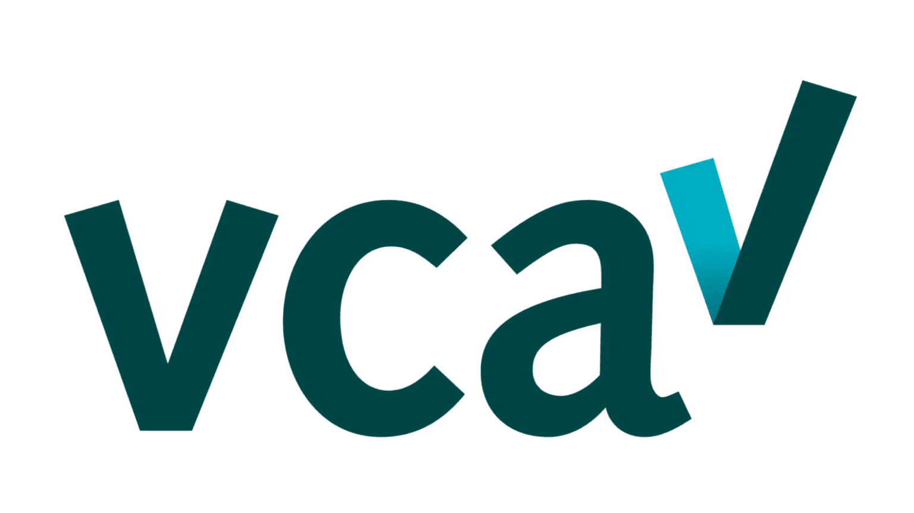
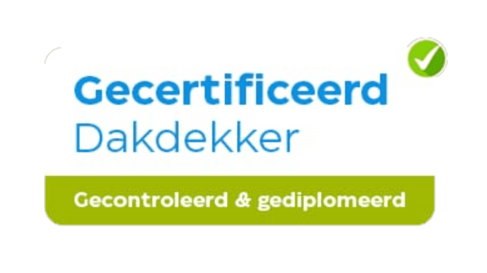
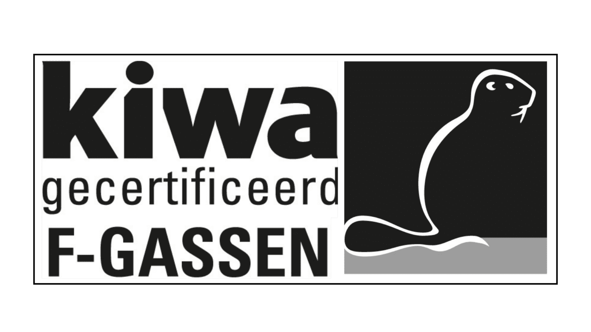

Warmte
Cv-ketels, vloerverwarming en hybride installaties met warmtepomp. Van het advies tot het moment dat het huis warm is.
Installatietechniek en dakwerk uit Harderwijk, sinds 2003
Een nieuwe cv-ketel, vloerverwarming, een lekkage, een storing in de elektra of een dak dat aan vervanging toe is: u belt, en u spreekt meteen iemand die verstand van zaken heeft.
4,7 uit 52 Google-reviews

Een gesprongen leiding of een koude douche komt nooit gelegen. Als u belt, krijgt u direct een specialist aan de lijn die de situatie inschat. Onze monteurs zijn STEK- en CO-vrij-gecertificeerd en lossen het probleem vakkundig op.
Bel direct: 0341 269 882Directe actie bij onveilige situaties of waterschade.
Geen verwarming in de winter, of uitval van een koelsysteem dat moet blijven draaien.
Kortsluiting of totale stroomuitval, thuis of in uw bedrijf.
De vier tegels in ons logo staan voor de vier vakgebieden van Prowil. U heeft één aanspreekpunt, ook als een klus meerdere installaties raakt.

Cv-ketels, vloerverwarming en hybride installaties met warmtepomp. Van het advies tot het moment dat het huis warm is.

Leidingwerk, gas en water, lekkages opsporen en verhelpen. Een kraan vervangen of een complete aansluiting: netjes aangelegd en opgeruimd achtergelaten.

Elektra aanleggen bij een verbouwing of nieuwbouw, en storingen verhelpen in woning en bedrijfspand.

Airco's en klimaatbeheersing voor woning en bedrijf. Volledig STEK-gecertificeerd, dus bevoegd om met koudemiddelen te werken.

Prowil is ook dakdekkersbedrijf. Het dak beschermt alles wat eronder zit. Wij vertellen u eerlijk hoe het ervoor staat en wat er nodig is, voordat een lekkage schade aanricht.
4,7 gemiddeld uit 52 reviews op Google
"Wij ontdekten vorige week dat we met spoed een nieuwe CV-ketel nodig hadden. We belden Prowil en toen we aangaven dat het spoed was, kregen we direct eigenaar André aan de lijn, die een paar uur later al bij ons langskwam ook al was het toen al avond. De volgende ochtend vroeg kwamen twee voortvarende en vriendelijke monteurs langs om de CV-ketel te plaatsen, die er enkele uren later hing."
"Vloerverwarming en een hybride CV installatie met warmtepomp. Uitstekend werk geleverd door André, Robert, Lorenzo en Marcel. Alles ziet er keurig uit, de vloerverwarming is een plaatje, bijna jammer dat er binnenkort een afwerkvloer over heen gaat. Naast het vakwerk erg fijne mensen om mee te werken.."
"Prowil heeft ons geholpen met iets dat eigenlijk onmogelijk was om op zo'n korte termijn voor elkaar te krijgen. Alle lof voor het snelle handelen, het meedenken en natuurlijk de professionele uitvoering. De installateurs zijn vriendelijk, rustig, aardig en werken ongelooflijk netjes."
"Tot mijn volle tevredenheid is de storing verholpen die ik had in mijn vakantiehuisje op de Konijnenberg te Harderwijk. Ondanks dat men niet wist waar het vandaan kwam, kwam monteur gelijk met juiste oplossing. Ik had ook gevraagd om douchekraan te vervangen en hij heeft deze gelijk besteld en binnen enkele dagen gemaakt. Top bedrijf, vakmensen"
"Meerdere keren Prowil gevraagd lekkages of andere problemen te verhelpen. Altijd goed opgelost. Andre en team werken netjes."
Prowil werkt sinds 2003 vanuit de Industrieweg in Harderwijk, voor particulieren en voor zakelijk vastgoed in heel Nederland. Voor een woning denken we mee over comfort en verduurzaming. Voor hotels, vastgoedbeheerders en tankstations zorgen we dat onderhoud gebeurt zonder dat de dagelijkse gang van zaken stilvalt.
Duidelijkheid vooraf. We vertellen eerlijk wat er nodig is en wat het kost.
Korte lijnen. U spreekt direct met de mensen die het werk uitvoeren.
Maatwerk. Geen standaardverhaal, maar een oplossing die past bij uw pand en budget.
Gecertificeerd. STEK-gecertificeerd voor koelinstallaties en airco, CO-vrij-gecertificeerd voor gasverbrandingsinstallaties.

Erkend en gecertificeerd



Voor spoed belt u gewoon, dag en nacht. Voor een offerte of advies kunt u ook mailen of het formulier invullen.
0341 269 882